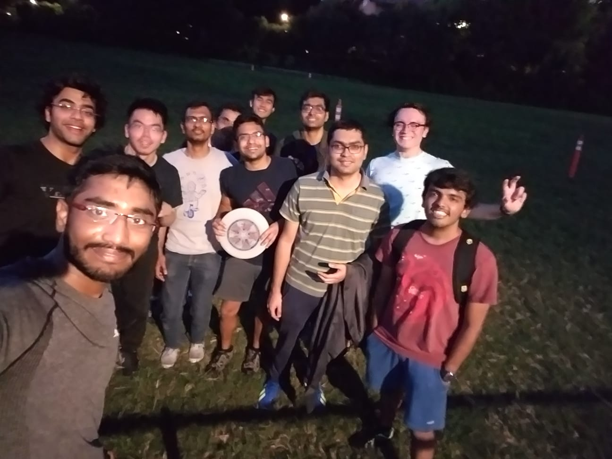

Hobbies and Activities
I love sports and believe that they teach important life values like determination and team-work, all while buiding self-confidence and maintaining fitness. I play badminton and soccer. I also play ultimate frisbee on Friday evenings on campus with fellow Berkeley inmates. Drop me a line if you're around and would like to join us! :)

Bay area has beautiful trails, which are great to explore on bike. I also enjoy swimming. Last summers I competed in a triathlon in the beautiful Lake Tahoe. It involved 1 mile swim, 25 mile bike, and a 7 mile run (checkout the photos below). Training for a triathlon was an amazing experience, significantly improving my fitness. I am planning to do it again next year, hopefully with a better finish.


I love travelling, hiking, camping, and backpacking. I am also an active thrill-seeker; checkout the videos below!